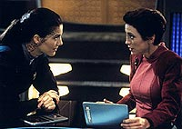
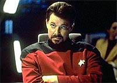
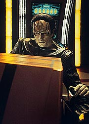
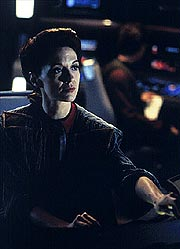
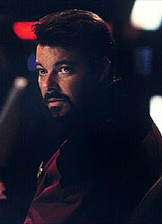

MANCHETE
DO EPISDIO
Maquis,
Tom Riker e Dukat voltam
a DS9 para promover intriga poltica
Episdio
anterior | Prximo
episdio
Sinopse:
Data Estelar: 48467.3.
O comandante Will Riker est de
passagem em DS9, para Risa, e se encontra com uma estafada Kira.
Os dois acabam conversando bastante. No dia seguinte, Kira leva
Riker para mostrar a Defiant. Assim que Kira libera a trava de
segurana do computador da nave, Riker a tonteia com um feiser
escondido, transporta dois asseclas a bordo (Kalita e Tamal) e
finge um acidente no ncleo de dobra para conseguir que Sisko
libere as garras de atracao, o que permite que Riker parta,
com a Defiant, em dobra, rumo s Badlands. A conhecida Maquis,
Kalita, pilota a nave e cumprimenta Riker, chamando-o por Tom.
Riker retira as suas costeletas postias.

Algum
tempo depois, na estao, Odo informa a Sisko e a Dukat, em uma
reunio, que de fato o raptor Thomas Riker. Tom uma
duplicata idntica de William Thomas Riker, criada devido a um
bizarro acidente de transporte, nove anos atrs. Tom e Will so
idnticos, indistinguveis sob qualquer exame conhecido. De
fato, Tom teria tanto direito a ser o "real" Riker
quanto Will. O segundo Riker foi descoberto dois anos antes e
adotou o seu nome do meio, passando a servir como tenente da Frota
a bordo da nave estelar USS Ghandi, onde expressou opinies polticas
consistentes com as de um simpatizante Maquis.
Dukat est chocado. Imediatamente Sisko concorda que o Comando
Central Cardassiano queira enviar naves no interior da Zona
Desmilitarizada para realizar buscas e, como prova de boa f, se
oferece (como o homem que projetou a Defiant) para ir a Cardssia
com Dukat para ajudar a localizar, desabilitar e, se necessrio,
destruir a Defiant.
Kira acorda em um dos aposentos da Defiant, furiosa com Riker. Ele
ordena curso direto para a fronteira Cardassiana. Ao chegar em
Cardssia, Dukat e Sisko se instalam em uma "sala de
guerra", de onde a busca ser coordenada sob a superviso
de uma oficial da Ordem Obsidiana Cardassiana, de nome Korinas.
Imediatamente se instala um confronto entre Korinas e Dukat
(microcosmos da Ordem Obsidiana, servio de inteligncia, e do
Comando Central, gabinete militar, respectivamente), quando ela
mostra ter conhecimento do dispositivo de camuflagem da Defiant
enquanto ele nada sabe. Sisko lhes d uma forma de detectar a
Defiant mesmo camuflada (fornecendo informao sobre o feixe de
antiprtons que os Jem'Hadar utilizaram, com sucesso, para
detectar a Defiant camuflada anteriormente, durante a misso que
levou a descoberta dos Fundadores do Dominion).

Utilizando
uma ttica de despistamento coordenada com outras naves Maquis, a
Defiant rompe a fronteira Cardassiana e ruma diretamente para o
corao do seu territrio quando Kira sabota a nave, que fica
fora de ao ao menos por meia hora (escondida em uma nebulosa).
Aps os reparos, ela segue (com um vazamento de neutrinos que
pode ser detectado mesmo atravs da camuflagem) para o sistema
Orias (continuando a utilizar tticas de despistamento no
caminho), onde Riker acredita que exista uma fora de invaso
Cardassiana ao territrio da Federao sendo montada, uma operao
to secreta que nem mesmo o Comando Central Cardassiano tem
conhecimento.
Riker leva Kira para a ponte da Defiant, onde ele pode ficar de
olho nela. Kira diz que as atitudes de Riker so inconsistentes
com as de um grupo (de terroristas) como os Maquis. Ela afirma
(com base em sua prpria experincia pessoal combatendo
Cardassianos no tempo da ocupao) que ele est tentando bancar
o heri e no fortalecer a causa Maquis. Pela atual disposio
das naves Cardassianas devido estratgia de despistamento de
Riker, Sisko reconhece o sistema Orias, que acabou ficando
desguarnecido, como o alvo de Tom. Dukat, aps examinar os grficos,
chega mesma concluso e, quando vai emitir a ordem para que
uma nave v investigar o sistema, Korinas reage violentamente e
diz que qualquer nave (mesmo Cardassiana) que entrar no sistema
Orias ser destruda imediatamente, por assunto confidencial da
Ordem Obsidiana.
A Defiant finalmente faz uma investida direta ao sistema Orias. Ao
se aproximar do sistema, Riker ordena uma varredura completa dos
sensores. A Defiant detectada pelo rastro de neutrinos se
movendo em dobra e encontra-se acuada com trs naves da Ordem
(oriundas do interior do sistema Orias, especificamente de Orias
III, o nico planeta classe-M do sistema e que deveria estar
deserto, segundo Dukat) vindo pela sua vanguarda e outras 10 naves
do Comando Central (entre elas a Kraxon) pela sua retaguarda.
O fato de que a Ordem no tem permisso de ter equipamento
militar como naves de guerra deixa Dukat infinitamente curioso
para saber o que est acontecendo no interior de tal sistema.
Kira insiste que Riker deve fugir enquanto h tempo, Riker ordena
a Defiant para o interior do permetro do sistema.
Kira finalmente entende que Tom no est fazendo isso pelos
Maquis ou com os Maquis, mas sim est apenas utilizando a causa
Maquis como mais uma "causa perdida frente a inimigos invencveis",
uma mortalha para envolver a figura de um heri que ele espera se
tornar. Um heri que ter uma figura distinta da de Will Riker.

A
Defiant luta bravamente contra as naves da Ordem, mas o reforo
delas j est a caminho. Sisko e Dukat (aps chegarem a um
entendimento) propem um acordo por rdio, Riker deve se
entregar (junto com os registros dos sensores da Defiant relativos
ao sistema Orias) autoridade do Comando Central Cardassiano e
enfrentar uma pena de priso perptua em um campo de trabalhos
forados (pelo fato de a pena no ser de execuo, Riker j
reconhece algum esforo por parte de Sisko e Dukat) enquanto a
Defiant e a sua imediata tripulao podem partir de volta ao
territrio da Federao. Riker pede um momento para pensar
sobre tal proposta.
Kira novamente pede a Riker que ele seja oficial da Frota uma ltima
vez e pense em sua tripulao, o que o convence a aceitar os
termos do acordo. Pouco antes de se teletransportar para a Kraxon,
para enfrentar sua pena, ele d um beijo em Kira, a qual promete
que um dia de alguma forma ir tir-lo de l. Kira toma o
comando da Defiant e ordena um curso de volta Federao.
Comentrios:
"Defiant" se apresenta como o melhor episdio da
temporada at aqui. Para tanto, vrios elementos contribuem: uma
melhor amostra do potencial da Defiant, a interao entre Dukat
e Sisko, a interao entre a Ordem Obsidiana e o Comando Central
Cardassiano (via microcosmo de Korinas e Dukat, respectivamente),
o retorno dos Maquis (especialmente com a genial idia de fazer
de Tom Riker um Maquis e responsvel por to importante misso)
e uma efetiva participao de Kira como a nossa
"ex-terrorista de planto". Apenas algumas falhas
menores de trama e a atitude recorrente dos produtores em
"estimular" a vida amorosa de Kira incomodam. Mais
detalhes, sem ter a necessidade de ser duplicado por um acidente
de transportes, se juntar aos Maquis e roubar a Defiant no
processo, nas linhas abaixo.
A reao introduo da Defiant, tanto por parte dos Maquis
quanto por parte da Ordem Obsidiana, foi bastante bem-vinda, assim
como mais uma oportunidade para a "navezinha valente"
mostrar o seu valor. De fato, se no fosse pela ajuda de Sisko e
Kira, provavelmente a Defiant teria chegado sem maiores problemas
ao sistema Orias.
Finalmente descobrimos que T'Rul voltou para Romulus, mas no
levou o dispositivo de camuflagem com ela. A generosidade dos
Romulanos com o dispositivo no faz muito sentido, especialmente
depois de fazer tanto alarde pela segurana do equipamento em
primeiro lugar (ser que isso relacionado com alguma clusula
secreta do tratado de Algeron?). O fato de Sisko ter ajudado a
projetar a Defiant torna a relao dele com a sua nave distinta
da dos outros capites de Jornada.

O
maior problema de trama a maneira como Riker conseguiu entrar
com um feiser de mo na Defiant, especialmente porque j foi
mostrado anteriormente que existem mecanismos de segurana nas
portas para detectar armas (ver "Captive
Pursuit", da primeira temporada de DS9).
Problemas menores vm da forma "sutil" que Riker usa
para se livrar de O'Brien (ele soube lidar com Dax) e do porqu
de Riker no ter transportado Kira de volta para a estao ao
mesmo tempo em que trouxe os seus asseclas a bordo.
Sisko e Dukat revivem a parceria vencedora de "The
Maquis" no presente episdio (de novo um episdio
envolvendo os Maquis, por sinal), com resultados muito bons, ainda
que no no nvel daquele episdio duplo. Um certo
desapontamento vem do fato de termos pouca continuidade em relao
aos dois, basicamente uma referncia ao sistema de justia
Cardassiano e s (ao menos uma linha sobre "Civil
Defense" seria interessante). Se Dukat for mais
humanizado que nesta semana ele vai ter de mudar a maquiagem.
Interessante a situao difcil em que ele se encontrava com
Korinas "fungando no seu cangote" e Riker dando um banho
de ttica com a Defiant.
Novamente a Ordem Obsidiana posta para bom uso e Korinas de
dar arrepios. A interao entre Korinas e Dukat mais efetiva
(como microcosmo de suas respectivas agncias) do que aquela
entre Entek e Ghemor, em "Second
Skin". Apesar de que tenha faltado Korinas comentar
sobre a "misso de resgate" de Sisko naquela
oportunidade. Ganhamos tambm uma melhor compreenso da
estrutura de poder Cardassiana.
Dentre os seis episdios de DS9 que tm os Maquis como
foco principal ("The
Maquis, Part I", "The
Maquis, Part II", "Defiant", "For
the Cause", "For the Uniform" e "Blaze
of Glory"), este o que apresenta a menor intensidade
dramtica, optando por algo mais na veia do "thriller de ao"
(um subconjunto do que muitos gostam de chamar de "DS9 Comic
Book").
Por slidas razes, o nome de Thomas Riker deveria
obrigatoriamente constar no topo da lista de recrutamento dos
Maquis, e um membro to especial s poderia ser utilizado em
algo to audacioso e com bvias e imediatas possibilidades tticas,
como o roubo da Defiant. Ainda que a misso escolhida esteja
muito mais de acordo com os interesses pessoais de Tom Riker do
que com os interesses potenciais dos Maquis (o que parece indicar
que ele forou a barra para as coisas terem se desenrolado dessa
maneira, uma vez que ele tinha "a mo" bastante forte
--tal investimento pessoal possivelmente o deixou no "piloto
automtico" quanto misso, mesmo ela se tornando mais e
mais impossvel de se realizar durante o seu curso).
O personagem com maior foco no episdio sem dvida Tom Riker
(cabendo observar que o ttulo "Defiant" pode se
referir tanto nave quanto ao personagem) e o roteirista Ronald
D. Moore optou corretamente por creditar as motivaes do
personagem em um particular (e talvez o mais fundamental) elemento
da condio humana: nossa individualidade (em que ela
baseada? De que forma e a que preo ns a obtemos?). A
individualidade do personagem explorada aqui de uma maneira
muito mais efetiva do que originalmente foi em "Second
Chances".
Colocando Riker e Kira (nossa "Especialista em terrorismo de
planto") juntos, ficou fcil analisar as motivaes do
oficial da Frota. impressionante como a gente pode falar as
frases de Kira em antecipao e ainda assim ser surpreendido.
Coisa das grandes personagens.
Dois grandes demritos foram: os flertes de Kira com Riker e o
beijo no final (tais situaes vm se acumulando ao longo da
temporada, com relao major). Pelo menos ela se lembrou do
vedek Bareil e ele vai aparecer no prximo episdio.

A
direo de Cliff Bole correta, equilibrando (encontrando um
interessante compromisso) o desenvolvimento dos personagens com um
andamento tpico de um thriller, estilo "The Hunt Of The Red
October" ou o prprio "Fail Safe". O nico cenrio
novo do episdio foi a "sala de guerra" Cardassiana
que, apesar do esforo e da consistncia do projeto, no chega
a impressionar, pois estamos acostumados demais com o visual
Cardassiano de DS9. Tivemos pelo menos dois problemas de escala
aqui: quando a Defiant fica sob os escudos da Kraxon, e com relao
aos grficos tticos na "sala de guerra" Cardassiana
(tais grficos no foram nada explicativos ou mesmo consistentes
--para no dizer pfios). Em compensao, os efeitos visuais
do combate entre as naves foram interessantes.
Visitor fica com o destaque dentre os regulares. A autenticidade
da atriz no papel completa, ficando com o destaque da semana
entre os regulares. Brooks foi bem tambm e claramente o ator se
beneficia de sua interao com Alaimo. Basta conferir os olhares
que os dois trocam quando os seus personagens esto negociando um
acordo para terminar o conflito envolvendo a Defiant e a sua
tripulao. Os demais regulares funcionaram particularmente bem
em suas cenas residuais, cenas que foram bem justificadas desta
vez, no soando artificiais como muitas vezes o caso.
As costeletas postias foram uma boa idia, pois depender
exclusivamente do careteiro Frakes para diferenciar os dois Rikers
no bom negcio (o que ficou claro em "Second
Chances" e aqui tambm). Ele interpreta os dois
basicamente da mesma forma e as diferenas afloram de elementos
especficos no roteiro com este propsito (o que deveria ser
exatamente o contrrio em uma situao ideal). Alaimo vive um
Dukat que realmente queria estar fazendo outra coisa naquele dia,
a idia do lamento pela perda do aniversrio do filho de Dukat
se incorpora de forma transparente sua caracterizao, em
mais um grande trabalho do ator. O'Neil faz talvez a mais
arrepiante agente da Ordem em toda a srie. O sorriso dela
absolutamente matador e seu trabalho com Alaimo exemplar. Ela
fica com o destaque entre os convidados. Cochran absolutamente
perfeita com o pouco de material fornecido e Kerbeck e Canavan no
comprometem.
O comeo do episdio, com o ngulo da "Kira estafada"
(lembrando o "O'Brien estafado" de "Babel",
da primeira temporada de DS9), foi muito legal e a
incredulidade de Kira frente ordem de Bashir foi tima. Quark
oferecendo (essencialmente) os mesmos "prmios do milionsimo
cliente" de "Meridian"
foi um belo e discreto toque, vendido bem de novo pelo rosto de
Kira (Visitor).
A verdade sobre os planos secretos da Ordem Obsidiana no sistema
Orias (sem dvida o elemento mais interessante de todo o episdio)
seria revelada mais tarde, na terceira temporada de DS9 no
legendrio episdio duplo "Improbable Cause"/"The
Die Is Cast". Aguardem!
Tom Riker nunca mais foi visto ou mesmo citado na srie. A
Bajoriana Ro Laren, que deixa a Frota para se unir aos Maquis em "Preemptive
Strike", da stima temporada de A Nova Gerao,
nunca foi vista ou citada em DS9. A Bajoriana Sito Jaxa
(uma colega de Academia de Wesley Crusher vista inicialmente em "The
First Duty", da quinta temporada de A Nova Gerao),
que dada como morta no cumprimento do dever em "Lower
Decks", tambm da stima temporada de A Nova Gerao,
idem.
O episdio se passa, dentro da linha tempo de Jornada,
entre os eventos de "All Good Things..." (episdio
duplo e final de A Nova Gerao) e "Generations"
(primeiro filme da turma de Picard no cinema).
"Defiant" traz DS9 de novo para o terreno
da intriga poltica, uma de suas facetas mais notveis. A
utilizao de temas e personagens recorrentes ajuda bastante o
episdio (ainda que o nvel de continuidade no seja to alto
ou mesmo to coordenado quanto poderia e deveria ser). O esforo
dos roteiristas em esclarecer, de forma verdadeira, as motivaes
de Tom Riker tambm digno de nota. Entretanto o entendimento
de Sisko e Dukat de que o real inimigo no era Riker a bordo da
Defiant, mas sim as atividades secretas da Ordem (no sistema
Orias) que realmente "vende" o episdio para o pblico.
Um elemento que literalmente grita por uma continuao que (no
tenham dvidas) vir em grande estilo. Um excelente trabalho dos
envolvidos.
Citaes
Bashir - "At least two
of these items must be used and fully enjoyed before you leave
this facility."
("Pelo menos dois desses itens devem ser usados e totalmente
aproveitados antes que deixe esta instalao.")
Dukat - "This is a very entertaining story... but why am I
listening to it?"
("Essa uma histria muito divertida... mas por que a
estou ouvindo?")
Korinas - "I only wish we had someone with such keen
tactical instincts."
("Eu bem que queria que tivssemos algum com instintos tticos
to apurados.")
Dukat - "--but someone has to pay for what's happened
here, and I don't want that someone to be ME."
("--mas algum precisa pagar pelo que aconteceu aqui, e eu no
quero que esse algum seja EU.")
Kira- "This is about you, isn't it? You and that other
Will Riker out there --the one with your face, your name, your
career."
("Isso sobre voc, no ? Voc e aquele outro Will
Riker l fora --o que ficou com seu rosto, seu nome, sua
carreira.")
Tom Riker - "This ship was built to fight. I think it's
time she got her chance."
("Essa nave foi construda para lutar. Acho que hora de
darmos a ela a chance.")
Trivia:
 Ron Moore lembra que a equipe de roteiristas de DS9 j
vinha falando em trazer Tom Riker para a estao e faz-lo
alguma espcie de lder dos Maquis h algum tempo. Ira Behr
sugeriu que inicialmente ele andasse um pouco pela estao e
interagisse com os demais personagens antes de revelar a sua conexo
com os Maquis. Quando Moore sentou para escrever o primeiro
rascunho, ele se perguntou o que os Maquis poderiam estar querendo
de DS9, a resposta foi imediata: "A Defiant!" Moore ento
conseguiu escrever at o roubo da Defiant por Tom Riker, mas a
partir da o roteirista "travou".
Ron Moore lembra que a equipe de roteiristas de DS9 j
vinha falando em trazer Tom Riker para a estao e faz-lo
alguma espcie de lder dos Maquis h algum tempo. Ira Behr
sugeriu que inicialmente ele andasse um pouco pela estao e
interagisse com os demais personagens antes de revelar a sua conexo
com os Maquis. Quando Moore sentou para escrever o primeiro
rascunho, ele se perguntou o que os Maquis poderiam estar querendo
de DS9, a resposta foi imediata: "A Defiant!" Moore ento
conseguiu escrever at o roubo da Defiant por Tom Riker, mas a
partir da o roteirista "travou".
A histria comeou a recuperar fora nas reunies de equipe a
respeito do episdio. Algum trouxe tona (provavelmente o prprio
Behr) a idia do filme "Fail Safe" e foi decidido
colocar Sisko em uma "sala de guerra" em Cardssia para
ajudar a localizar e destruir a sua prpria nave.
Gary Hutzel teve bastante trabalho com os grficos que detalhavam
os movimentos das naves Cardassianas e o espao patrulhado por
elas. Em especial a grande tela Cardassiana no existe como um
modelo fsico, mas como uma miniatura combinada com o auxlio da
tcnica da "tela azul".
Dukat lamentando ter perdido o aniversrio do seu filho um dos
vrios pontos que contriburam para que Dukat fosse considerado
por uma parte dos fs como um dos "mocinhos" da srie,
pelas temporadas trs, quatro e metade da quinta. Entretanto, o
episdio duplo "In Purgatory's Shadow" & "By
Inferno's Light" muda tal situao em uma das maiores
reviravoltas da srie.
A verdade sobre o personagem de Thomas Riker foi um ponto difcil
para o roteiro e a dicotomia "heri/terrorista" e os
seus problemas de identidade relativos existncia do outro
Riker s foram clareados com as sucessivas rescritas.
Frakes gostou muito de participar do episdio e chegou a dizer
que preferia Tom a Will na poca. De fato, o ator esperava uma
continuao em que Kira seria enviada para libertar Tom. O que
nunca aconteceu. De fato, na lista da quarta temporada (de temas
para possveis histrias) disponibilizada para os escritores
free-lancers, constam os seguintes temas com um claro "no
queremos isso" do lado: Tom Riker, Mirror-Jennifer Sisko (uma
histria interna j estava engatilhada), Nog na Academia (idem),
Odo grvido (?!), Jadzia Dax grvida (?!) etc. Falando em
gravidez, quem ficaria grvida seria a major Kira Nerys, ao final
da quarta temporada. Frakes ainda voltaria para dirigir "Past
Tense, Part II", ainda nesta terceira temporada.
As operaes secretas da Ordem Obsidiana no sistema Orias seriam
explicadas no legendrio episdio duplo "Improbable
Cause" & "The Die is Cast", mais a
frente nesta mesma terceira temporada.
O personagem Thomas Riker foi introduzido no episdio "Second
Chances", da sexta temporada de A Nova Gerao.
Tom uma duplicata idntica de William Thomas Riker criada
devido a um bizarro acidente de transporte, descrito naquele episdio.
Tom e Will so idnticos, indistinguveis sob qualquer exame
conhecido. De fato, Tom teria tanto direito a ser o
"real" Riker quanto Will. Ao final de "Second
Chances", o segundo Riker adotou o seu nome do meio e
passou a servir como tenente da Frota a bordo da nave estelar USS
Ghandi, onde expressou opinies polticas consistentes com as de
um simpatizante Maquis. Essa recapitulao feita por Odo
durante o episdio "Defiant".
Tricia O'Neil participou (como Kurak) tambm de "Suspicions",
da sexta temporada de A Nova Gerao, mas
definitivamente mais lembrada pelos fs de Jornada pelo
seu trabalho como a capit da Enterprise-C Rachel Garrett, no
absoluto clssico "Yesterday's Enterprise", da
terceira temporada daquela srie.
Shannon Cochran revive aqui Kalita, a sua personagem Maquis de "Preemptive
Strike", da stima temporada de A Nova Gerao,
e retornaria ainda como a Klingon Sirella, esposa do general
Martok, em "You are Cordially Invited", da sexta
temporada de DS9.
Marc Alaimo retorna mais uma vez nesta temporada, em "Explorers".
Esta a nica participao de Robert Kerbeck em Jornada.
Michael Canavan viria a aparecer mais tarde (como Curneth) em "Unforgettable",
da quarta temporada de Voyager.
Ficha
tcnica:
Escrito por Ronald D. Moore
Direo de Cliff Bole
Exibido em 21/11/1994
Produo: 055
Elenco:
Avery Brooks como
Benjamin Lafayette Sisko
Ren Auberjonois como Odo
Nana Visitor como Kira Nerys
Colm Meaney como Miles Edward O'Brien
Siddig El Fadil como Julian Subatoi Bashir
Armin Shimerman como Quark
Terry Farrell como Jadzia Dax
Cirroc Lofton como Jake Sisko
Elenco convidado:
Marc Alaimo como
gul Dukat
Tricia O'Neil como Korinas
Shannon Cochran como Kalita
Robert Kerbeck como um soldado Cardassiano
Michael Canavan como Tamal
Jonathan Frakes como Thomas Riker
Majel Barrett como a voz do computador